Casas da Ilha · Porto Covo · Fonte MouroCasas da Ilha · Porto Covo · Fonte Mouro
Parque Cultural e Regenerativo de Porto CovoPorto Covo Cultural and Regenerative Park
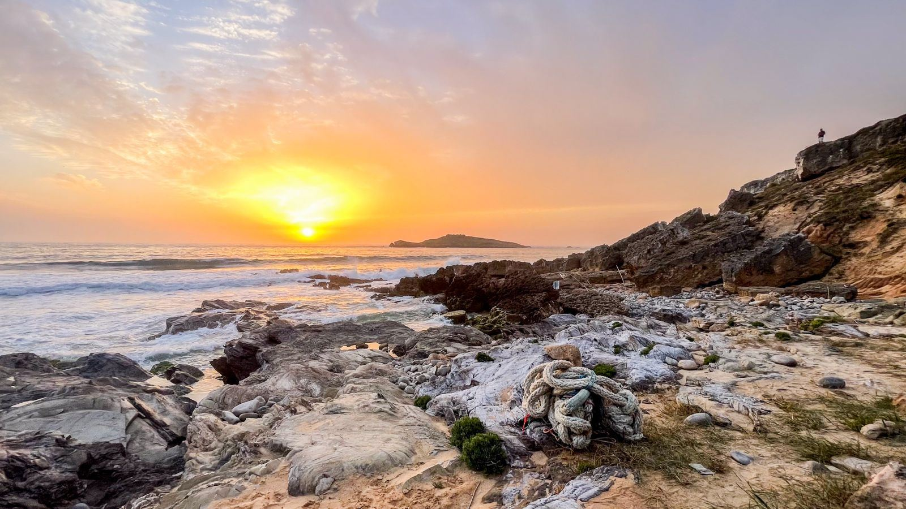
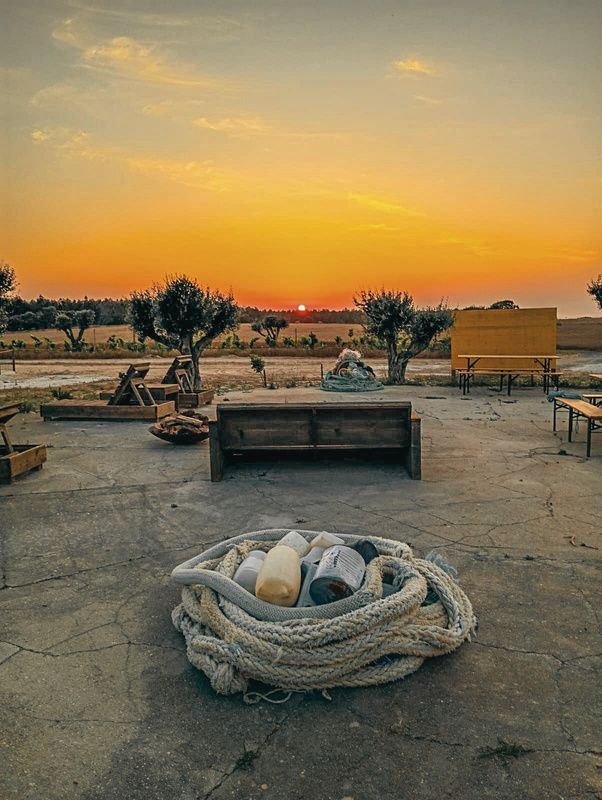
O ParqueThe Park
Arte, natureza e territórioArt, nature and territory
O Parque Cultural e Regenerativo das Casas da Ilha nasceu para valorizar o património natural, cultural e paisagístico da Costa Alentejana, num espaço onde a arte, a educação ambiental, a natureza e o lazer convivem.
Ocupa uma propriedade de cerca de 30 hectares no coração do Parque Natural do Sudoeste Alentejano e Costa Vicentina: lagoas naturais, vinhas, oliveiras centenárias, jardins mediterrânicos e extensas áreas verdes. Fica a poucos minutos da Ilha do Pessegueiro e de algumas das mais belas praias da costa portuguesa.
Ao longo do ano, o Parque acolhe exposições de arte, instalações ao ar livre, workshops, ateliers, atividades para crianças e famílias, ações de sensibilização ambiental, eventos culturais e experiências gastronómicas inspiradas na tradição alentejana.
The Casas da Ilha Cultural and Regenerative Park was created to celebrate the natural, cultural and landscape heritage of the Alentejo coast, in a place where art, environmental education, nature and leisure meet.
It covers around 30 hectares in the heart of the Southwest Alentejo and Vicentine Coast Natural Park: natural ponds, vineyards, century-old olive trees, Mediterranean gardens and wide green areas. Pessegueiro Island and some of the finest beaches on the Portuguese coast are a few minutes away.
Throughout the year the Park hosts art exhibitions, outdoor installations, workshops, ateliers, activities for children and families, environmental awareness actions, cultural events and food experiences rooted in Alentejo tradition.
MissãoMission
A cultura como força de transformaçãoCulture as a force for change
É um espaço de encontro, aprendizagem e inspiração, onde cada visitante é convidado a descobrir o território de forma consciente e participativa. Através de exposições, oficinas, atividades ao ar livre e momentos de convívio, promove-se uma ligação mais profunda entre as pessoas e a paisagem.
A missão do Parque é sensibilizar para a preservação do ambiente, celebrar a identidade local e demonstrar que a cultura pode transformar o território, promovendo a biodiversidade, a economia circular e uma relação mais responsável entre o Homem e a Natureza.
It is a place to meet, learn and be inspired, where every visitor is invited to discover the territory in a conscious, participatory way. Through exhibitions, workshops, outdoor activities and shared moments, it builds a deeper bond between people and the landscape.
The Park's mission is to raise awareness of environmental preservation, celebrate local identity and show that culture can transform a territory, supporting biodiversity, the circular economy and a more responsible relationship between people and nature.
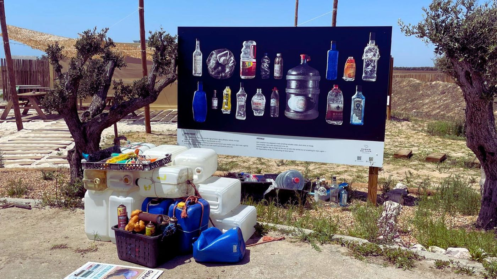
Exposição de fotografia · Nuno AntunesPhotography exhibition · Nuno Antunes
WASTE 2 ARTE
Amazing Recycling Territory Experience
Integrada na programação paralela do Festival Músicas do Mundo e com o apoio da Câmara Municipal de Sines, a Waste 2 Arte inaugura o primeiro projeto do Parque Cultural e Regenerativo das Casas da Ilha.
Uma exposição que propõe uma reflexão sobre a relação entre o Homem e o Oceano, entre o Homem e o Planeta, e mostra como a criatividade pode valorizar materiais recolhidos no ambiente e estimular comportamentos mais responsáveis.
São 18 obras de fine art photography do fotógrafo e recoletor Nuno Antunes, resultado de vários anos de observação da costa alentejana e de ações de plogging nas praias do concelho de Sines.
Cada fotografia convida a olhar duas vezes: primeiro vemos um objeto abandonado; depois descobrimos uma memória, um fragmento da nossa relação com o oceano e com o planeta. Aquilo que descartamos nunca desaparece, apenas muda de lugar.
Porque o mar transforma.
A arte revela.
E nós escolhemos o futuro.
Part of the parallel programme of the Músicas do Mundo Festival and supported by Sines City Council, Waste 2 Arte opens the first project of the Casas da Ilha Cultural and Regenerative Park.
The exhibition invites reflection on the relationship between humanity and the ocean, and between humanity and the planet, showing how creativity can add value to materials collected from the environment and encourage more responsible behaviour.
It brings together 18 fine art photographs by photographer and beachcomber Nuno Antunes, the result of years observing the Alentejo coast and plogging on the beaches of the Sines municipality.
Each photograph asks us to look twice: first we see an abandoned object; then we find a memory, a fragment of our relationship with the ocean and the planet. What we discard never disappears; it only changes place.
For the sea transforms.
Art reveals.
And we choose the future.
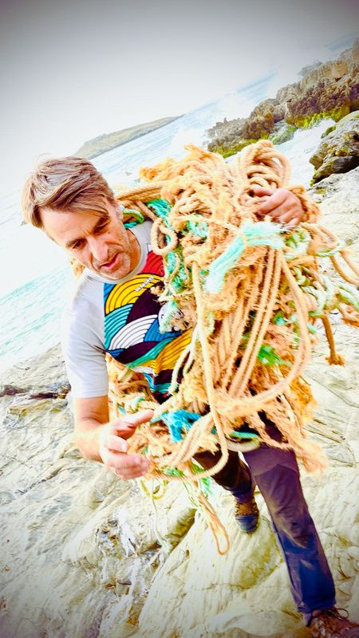
O artistaThe artist
Nuno Antunes
Fotógrafo, recoletor e observador atento da paisagem costeira. Há vários anos percorre as praias da costa alentejana em ações de plogging, recolhendo objetos que o mar devolve à terra.
Na sua obra, esses vestígios deixam de ser resíduos para se tornarem elementos de uma nova narrativa visual. Através da fotografia de autor e da composição, revela a beleza inesperada do que foi descartado e convida a questionar os conceitos de desperdício, valor e responsabilidade ambiental.
As imagens de Waste 2 Arte não documentam apenas uma realidade; reinterpretam-na.
Photographer, beachcomber and close observer of the coastal landscape. For years he has walked the beaches of the Alentejo coast plogging, collecting the objects the sea returns to land.
In his work these traces stop being waste and become part of a new visual narrative. Through fine art photography and composition he reveals the unexpected beauty of what was thrown away, and asks us to question ideas of waste, value and environmental responsibility.
The images in Waste 2 Arte do not simply document a reality; they reinterpret it.
Matéria-primaRaw material
Não nasce numa fábricaIt does not come from a factory
A matéria-prima do Waste 2 Arte nasce nas praias e exige paciência, suor e uma enorme vontade de a recolher.
Cada pedaço de madeira, cada boia, corda, rede ou objeto moldado pelo mar foi recolhido em ações de limpeza da costa alentejana. São materiais que perderam a sua função original, mas não a sua história.
Antes de se transformarem em arte, foram resíduos. Hoje são testemunhos da força do oceano e da responsabilidade que todos temos na preservação deste património natural.
The raw material of Waste 2 Arte comes from the beaches, and collecting it takes patience, sweat and a great deal of will.
Every piece of wood, every buoy, rope, net or object shaped by the sea was gathered during clean-ups of the Alentejo coast. These materials have lost their original purpose, but not their story.
Before becoming art, they were waste. Today they bear witness to the force of the ocean and to our shared responsibility for this natural heritage.
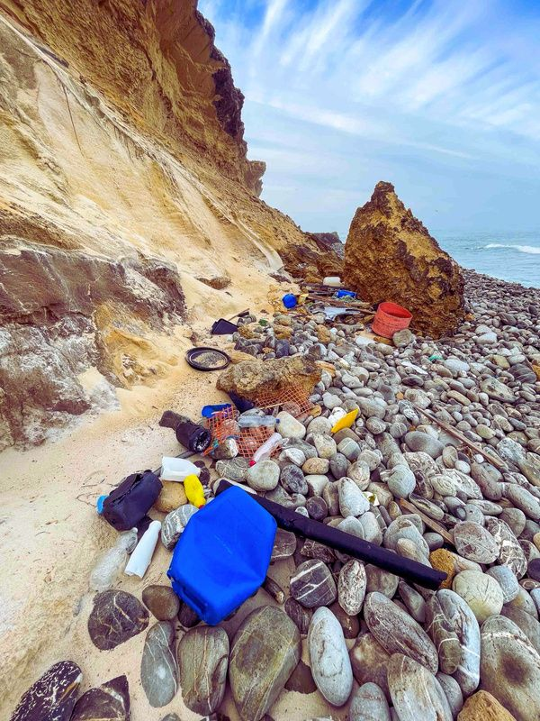
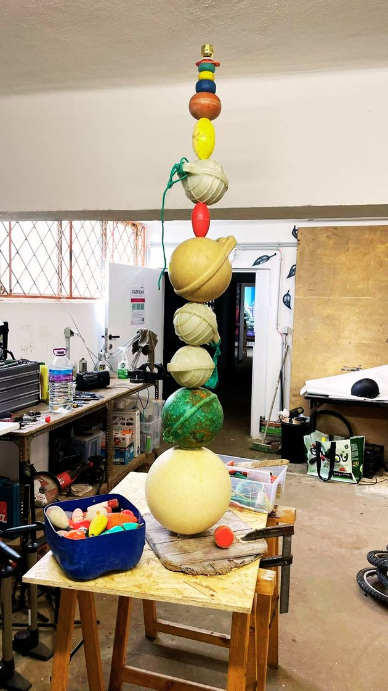
Waste 2 Arte
Atelier Casas da Ilha
Há objetos que o mar devolve sem que ninguém lhes volte a tocar. Outros encontram um novo destino.
Cada madeira desgastada pelo sal, cada boia, cada corda ou fragmento recolhido na costa volta a fazer parte de uma história. Não são transformados para esconder o passado, mas para o revelar: as marcas do tempo e do oceano ficam visíveis, porque são elas que lhes dão identidade.
Cada peça é única e irrepetível. Ao entrar numa casa, num jardim, num hotel ou num espaço público, leva consigo um fragmento da Costa Alentejana.
Some objects the sea returns are never touched again. Others find a new life.
Every piece of salt-worn wood, every buoy, rope or fragment gathered on the coast becomes part of a story again. They are not reworked to hide their past but to reveal it: the marks of time and ocean stay visible, because they give each piece its identity.
Each piece is unique and unrepeatable. In a home, a garden, a hotel or a public space, it carries a fragment of the Alentejo coast with it.
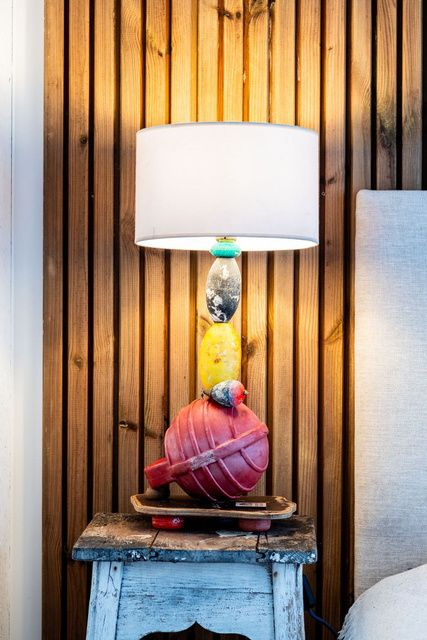
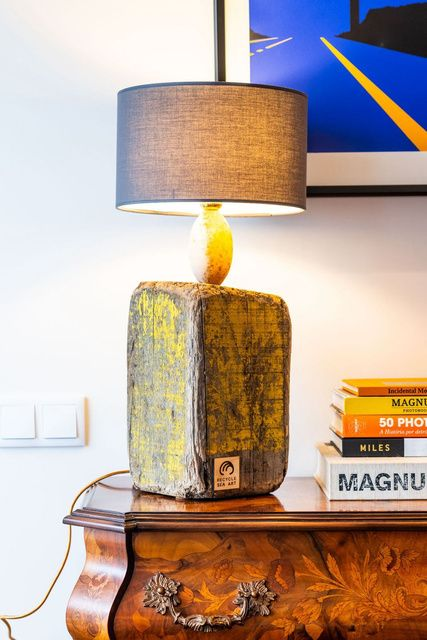
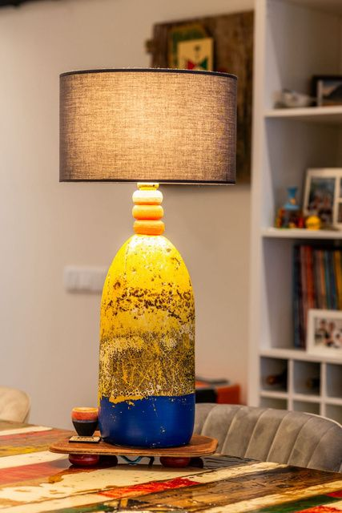
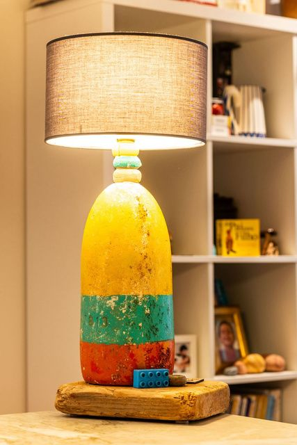
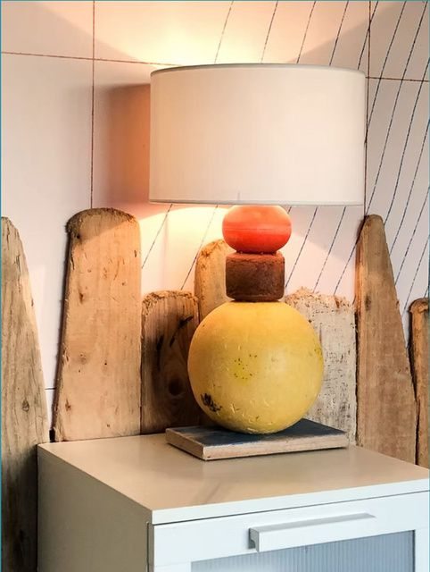
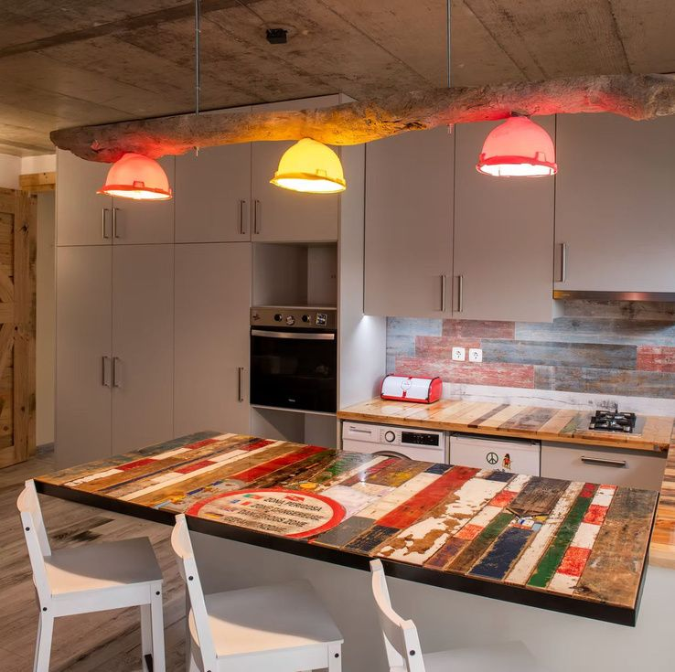
AgradecimentosAcknowledgements
Um projeto de muitas mãosMany hands
O Waste 2 Arte é um projeto construído por muitas mãos, movido pela convicção de que a arte pode inspirar uma relação mais consciente com a natureza.
À Câmara Municipal de Sines e ao seu Executivo, liderado pelo Presidente Álvaro Beijinha, pelo apoio e pela visão na valorização da cultura, do território e da sustentabilidade.
Ao Instituto da Conservação da Natureza e das Florestas (ICNF), cuja equipa desenvolve um trabalho exemplar na preservação do Parque Natural do Sudoeste Alentejano e Costa Vicentina. Um agradecimento especial ao Engenheiro Paulo Faleiro Silva e a toda a equipa, pela disponibilidade, profissionalismo e forma pedagógica com que ajudam a fazer acontecer iniciativas privadas que contribuem para a utilização sustentável do território do Parque.
À Junta de Freguesia de Porto Covo, na pessoa do seu Presidente, José Pedro Arsénio, e ao plogger portocovense Eurico Nunes, cuja dedicação à limpeza das nossas praias continua a inspirar esta missão.
À equipa de produção e a todos os parceiros e colaboradores. E ao fotógrafo e amigo Nuno Antunes, que, através do seu olhar, transforma resíduos em arte.
Casas da Ilha
Waste 2 Arte was built by many hands, driven by the belief that art can inspire a more conscious relationship with nature.
To Sines City Council and its Executive, led by Mayor Álvaro Beijinha, for their support and their vision for culture, territory and sustainability.
To the Institute for Nature Conservation and Forests (ICNF), whose team does exemplary work preserving the Southwest Alentejo and Vicentine Coast Natural Park. Special thanks to Paulo Faleiro Silva and the whole team for their availability, professionalism and the guidance they give to private initiatives that support the sustainable use of the Park.
To the Porto Covo Parish Council and its President, José Pedro Arsénio, and to Porto Covo plogger Eurico Nunes, whose dedication to cleaning our beaches keeps inspiring this mission.
To the production team and all our partners and collaborators. And to photographer and friend Nuno Antunes, who turns waste into art through the way he sees.
Casas da Ilha
Passeios a péGuided walks
De Porto Covo às Casas da Ilha, pela costaFrom Porto Covo to Casas da Ilha, along the coast
Um passeio de cerca de três horas que liga a aldeia ao Parque pelo caminho mais bonito: a beira-mar.
Parte do largo principal de Porto Covo, desce ao cais de pesca e segue o trilho de arriba até ao forte da Ilha do Pessegueiro. Daí continua para o interior até às Casas da Ilha, onde o passeio termina com a visita à exposição Waste 2 Arte.
Pelo caminho, é a paisagem que mostra porque é que este projeto existe: as praias, as rochas e o mar que devolve à costa os objetos fotografados na exposição.
A walk of about three hours that links the village to the Park along the most beautiful route: the seafront.
It starts in Porto Covo's main square, goes down to the fishing harbour and follows the clifftop trail to the fort facing Pessegueiro Island. From there it heads inland to Casas da Ilha, where the walk ends with a visit to the Waste 2 Arte exhibition.
Along the way, the landscape shows why this project exists: the beaches, the rocks and the sea that returns to the shore the objects photographed in the exhibition.
-
1
PartidaStart
Largo de Porto CovoPorto Covo square
Encontro no largo principal da aldeia, entre as casas brancas de barra azul.
Meeting point in the village's main square, among the white houses with blue trim.
-
2
DescidaDown to the sea
Cais de pescaFishing harbour
Descida até ao porto de pesca, onde os barcos ainda saem para o mar.
Down to the small harbour, where the boats still head out to sea.
-
3
Trilho costeiroCoastal trail
Forte da Ilha do PessegueiroPessegueiro Island fort
Caminho de arriba, com praias e enseadas, até ao forte em frente à ilha.
Clifftop path past beaches and coves to the fort facing the island.
-
4
ChegadaFinish
Casas da Ilha
Chegada ao Parque Cultural e Regenerativo e visita à exposição Waste 2 Arte.
Arrival at the Cultural and Regenerative Park and visit to the Waste 2 Arte exhibition.
- Pizza e bebida à chegada às Casas da IlhaPizza and a drink on arrival at Casas da Ilha
- Visita à exposição Waste 2 ArteVisit to the Waste 2 Arte exhibition
- Grupo mínimo de 4 pessoasMinimum group of 4 people
Bar da Eira · Pizza Bar
Fogo, massa e tempoFire, dough and time
Nos jardins das Casas da Ilha, as Pizzas de Porto Covo saem do forno feitas à mão, com massa mãe de fermentação natural.
É aqui que termina o passeio a pé, com pizza e bebida. Também pode vir só para jantar, levar para casa ou chamar o forno para a sua festa.
In the gardens of Casas da Ilha, Pizzas de Porto Covo come out of the oven made by hand, with naturally fermented sourdough.
This is where the guided walk ends, with pizza and a drink. You can also come just for dinner, take away, or book the oven for your party.
Quatro pizzas. Nenhuma a mais.Four pizzas. Not one more.
Para acompanhar: água, Coca-Cola, Ice Tea e cerveja bem fresca.
To drink: water, Coca-Cola, Ice Tea and ice-cold beer.
VisitarVisit